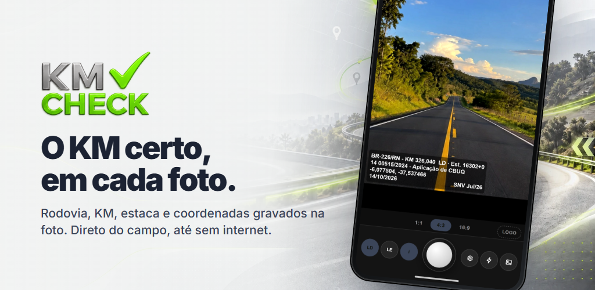

Baixe grátis
O KM certo, em cada foto.
Rodovia, KM, estaca, coordenadas, data e hora na própria imagem, com a base oficial do SNV. Funciona sem internet depois de baixar a rodovia.
Gratuito · iPhone e Android
Aponte a câmera do celular para baixar